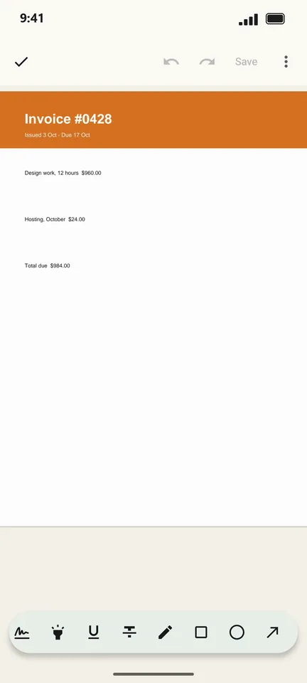
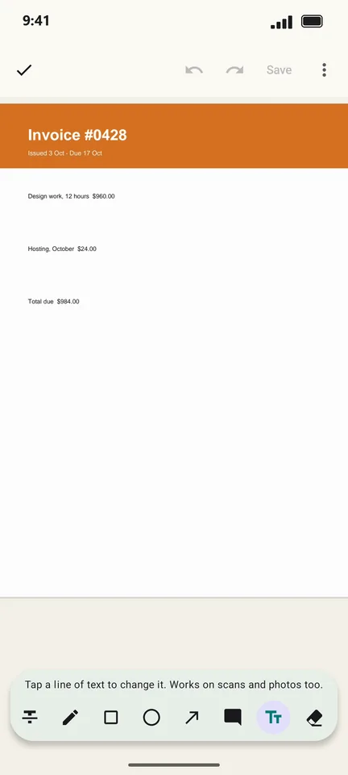
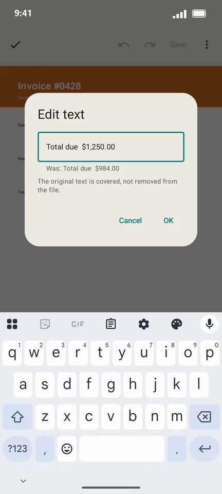
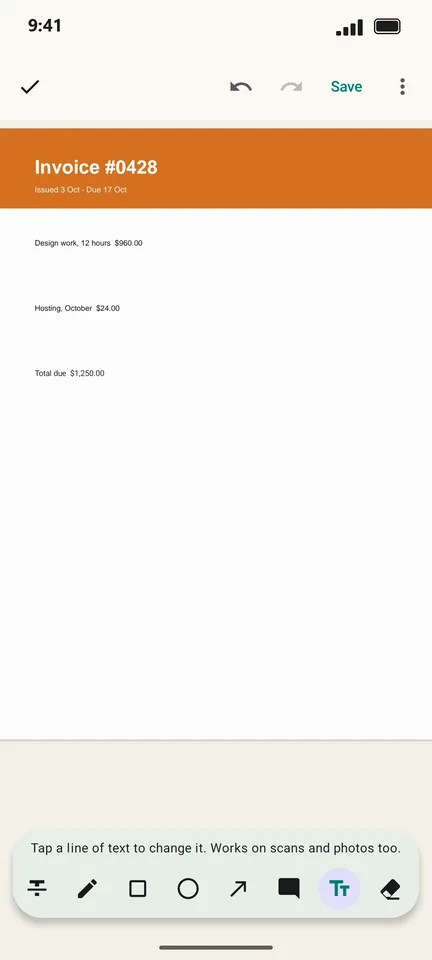

How to edit the text in a PDF on Android
A wrong date on an invoice, a typo in a form, an old phone number: you can fix one line of a PDF without the original Word file. PageCat replaces the line you tap with your new text, in a matching size.
Steps
Open the PDF and tap the pen icon (Annotate & fill).

Swipe the tool bar and choose Edit text (the Tt icon).

Tap the line you want to change and type the new text. The old text is shown under the box.

Tap OK. The page now shows your new line. Tap Save to keep the change.

Good to know
- It works on scanned pages and photos too: PageCat reads the line with on-device text recognition first.
- The original text is covered, not removed from the file. Do not use Edit text to hide private information; it is not a redaction tool.
- Only Western (Latin) characters can be typed in for now.
Questions
Can I edit a whole paragraph?
Edit text changes one line at a time. For longer changes, edit line by line or add a text note.
Will the font match?
PageCat matches the size and colours of the line. The typeface is a standard one, so it may differ slightly from the original.